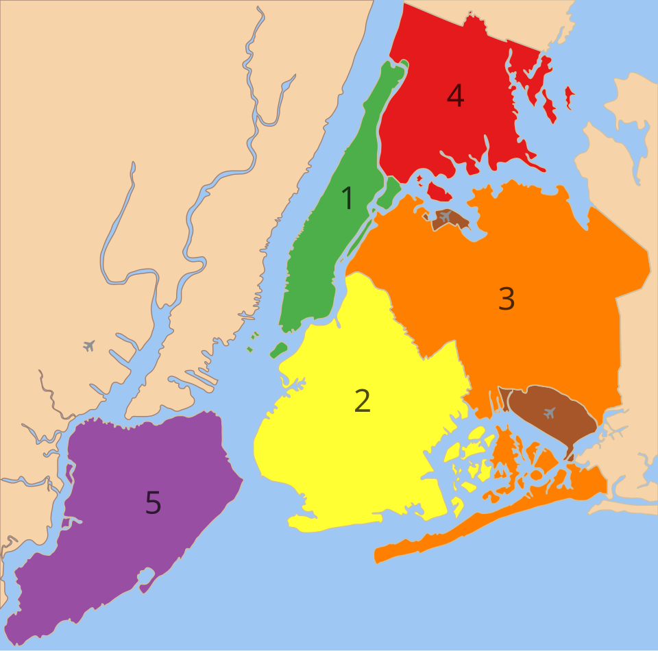

Mapa odsyłaczy na obrazku
Usemap i area - jak tworzyć interaktywne obrazy

Przykład kodu
<img src="mapa.png" alt="Mapa" usemap="#mapa">
<map name="mapa">
<area shape="rect" coords="10,10,200,150" href="strona1.html" alt="Obszar 1">
<area shape="circle" coords="300,120,50" href="strona2.html" alt="Obszar 2">
</map>Na obrazku można kliknąć wybrane obszary i przejść do różnych adresów. To przydatne do interaktywnych planów, map i diagramów.
Co warto wiedzieć
Warto używać czytelnych alt oraz poprawnych współrzędnych coords. Kształt shape może być rect, circle lub poly.